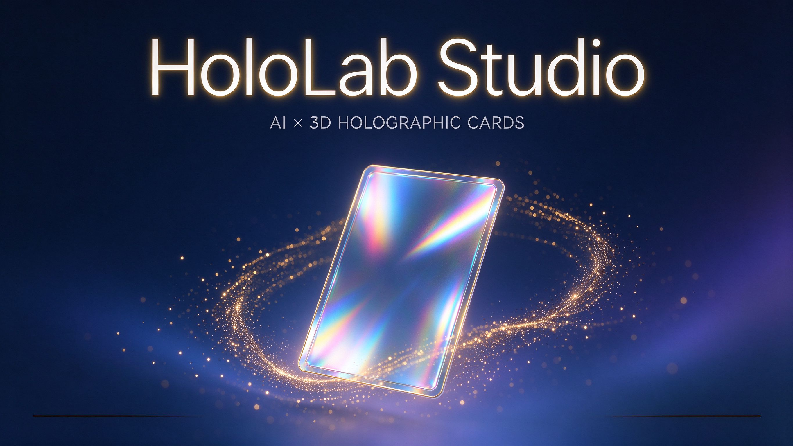

会随着你的视线流动的光影收藏。
每一张卡都由 AI 分层绘制、Blender 渲染、Three.js 实时合成—— 拖一拖，主体往前凸，背景往后退，镭射彩虹随角度流转。
0 张卡
豆包 Seedream 生成
Blender 渲染
纯静态 零后端
展厅里的卡，都是这样造出来的
AI 四层素材 → Blender 渲染 → Three.js 查看器 → 纯静态发布。你也可以亲手造一张——输入一句话，管线自动完成。
暂无卡片，稍后再来看看。